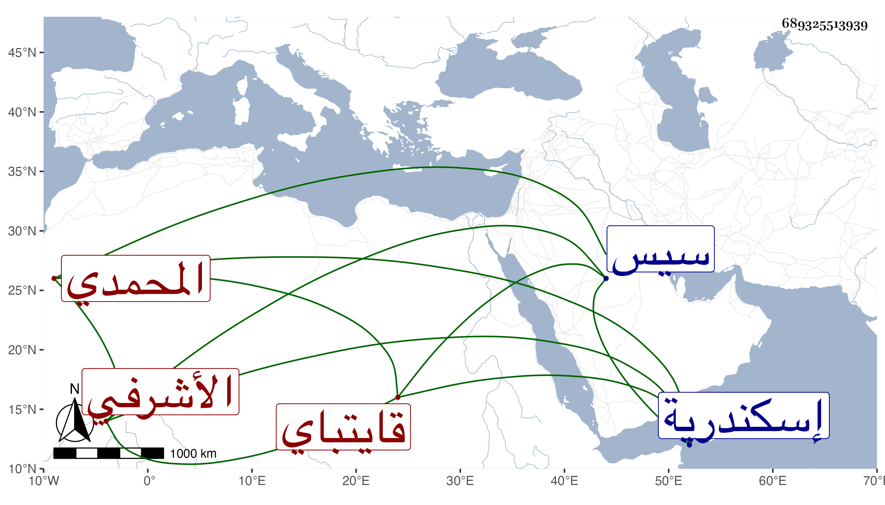

0902Sakhawi.DawLamic.ITO20230111-ara1.EIS1600.689325513939
Biography ID: 689325513939
530
عليباي المحمدي الأشرفي قايتباي . رقاه أستاذه لنيابة سيس ثم لنيابة إسكندرية بعد شغورها بموت جكم قرا فدام وتكرر طلبه للحضور فلم يجب إلى أن توعك فأجيب ووصل في المحرم سنة إحدى وتسعين ثم عاد إليها إلى أن كثر التشكي منه وركب عليه أهل البلد كافة وجيء به في جمادى الأولى سنة ست وتسعين فتوصل إلى الرضى عنه ثم عاد وبلغني في سنة تسع وتسعين أنه ...
